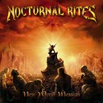

|
|
||
Nocturnal Rites : New World Messiah (2004) |
|

http://www.nocturnal-rites.com |
1. New World Messiah 4:09 |
8.5/10 |
|
La banda sueca Nocturnal Rites ha lanzado el sexto álbum de su carrera, titulado New World Messiah. Una voz fuerte, algo áspera y con personalidad, la de Jonny Lindqvist (ya en su tercer álbum con la banda), un excelente trabajo de la batería y las guitarras rítmicas, y unas más que acertadas aportaciones de teclados y coros llevan trayendo a buen puerto buenos discos de heavy metal desde hace nueve años, sobre todo desde la inclusión de Jonny, y este último no es una excepción. El disco empieza con la canción que le da nombre, "New World Messiah", un tema que comienza suave, pero que con un brusco cambio de ritmo y la aparición del doble bombo se transforma en un arranque perfecto, potente pero melodioso y sabiamente adornado con coros y teclados. En "Against the World" podemos escuchar un tema más lento, con algunos coros fantásticos y un ritmo marcado, potente y cautivador. El siguiente corte, "Avalon", definido por el dúo formado por el doble bombo y la guitarra, y donde quizás la batería hace un trabajo más destacado, tiene sin duda el estribillo más pegadizo y los coros más llamativos del disco. "Awakening" es una pieza de ritmo "galopante", atmósfera cambiante, coros espectaculares y algunas partes instrumentales bastante originales. No es difícil adivinar que el ambiente de "Egyptica" va a estar construido alrededor de escalas y sonidos de inspiración egipcia, y aunque el resultado no es demasiado original, tampoco defrauda. "Break Away" resulta una canción un poco plana, carente de elementos que llamen la atención. "End of days" tampoco es demasiado llamativa, aunque aquí el estribillo si merece algo de atención. "The Flame will Never Die" puede que sea el tema más pomposo y que más se apoya en los teclados de este disco, y sin duda el que destila más emoción contenida, emoción que se desata en el estribillo. La penúltima pista, "One Nation", es uno de esos temas que te animan nada más escuchar el primer acorde: una guitarra rítmica rápida y precisa, una voz potente, cambios de ritmo y un estribillo pegadizo y melodioso desarrollan una de las mejores canciones del álbum. Finalmente "Nightmare" cierra el disco con una rápida sección rítmica, una brillante línea melódica y preciosos coros en el estribillo. Un gran disco de Nocturnal Rites. No se les puede acusar de ser muy originales, pero tampoco de vivir de lo que otros inventaron: tienen su propio sonido, desarrollado sobre todo a partir de fichar como cantante a Jonny Linqvist, y lo plasman con maestría, álbum tras álbum. Muchas otras bandas quisieran poder decir algo así. |
||
- Crítica escrita por Rubén Béjar - |
||